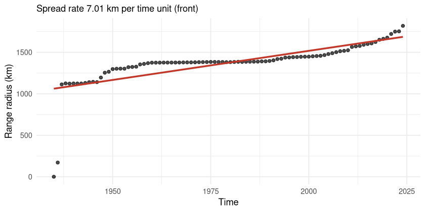

tidyinvasion brings the quantitative toolkit of invasion biology into the tidyverse and tidymodels. It follows an invasion from introduction to impact:
| Stage | Functions |
|---|---|
| Data classes |
inv_occurrence(), inv_pathway(), inv_as_sf(), cbd_pathways()
|
| Introduction |
inv_propagule_pressure(), inv_establishment_prob(), inv_detection_prob()
|
| Spread |
inv_distance(), inv_spread_rate(), inv_dispersal_kernel(), inv_lag_phase()
|
| Impact |
inv_impact_metrics(), inv_parker_impact(), inv_homogenization(), inv_eicat_score()
|
| Biosecurity |
inv_eradication_feasibility(), inv_horizon_scan()
|
| recipes |
step_inv_background(), step_inv_propagule_lags(), step_inv_env_distance()
|
| rsample |
inv_spatial_block_cv(), inv_temporal_transfer_cv()
|
| yardstick |
boyce_index() (Continuous Boyce Index), tss() (True Skill Statistic) |
| parsnip |
inv_sdm() (engines "glm", "iwlr"), inv_reaction_diffusion() (engine "skellam") |
| broom and ggplot2 |
tidy(), glance(), augment() and autoplot() methods |
Every function takes a data frame first, so it works with the native pipe, and selects columns with tidy evaluation. Results are tibbles. Distances (haversine or Euclidean) and maximum-likelihood fits are written in base R, so the package needs no compiled spatial libraries; sf point layers are accepted when sf is installed.
Installation
Install the development version from GitHub:
# install.packages("pak")
pak::pak("jmozez/tidyinvasion")Example: the cane toad invasion of Australia
cane_toad holds real, openly licensed GBIF records of the cane toad (Rhinella marina), released at Gordonvale, Queensland, in 1935.
library(tidyinvasion)
toads <- inv_occurrence(cane_toad, lon = lon, lat = lat, time = year,
species = species)
toads
#> # A <inv_occurrence>: 6,680 × 11
#> # Coordinates: lon, lat (EPSG:4326)
#> # Time: year
#> # Species: Rhinella marina
#> gbif_id species year month lon lat state basis_of_record
#> <chr> <chr> <int> <int> <dbl> <dbl> <chr> <chr>
#> 1 3779737797 Rhinella marina 1935 6 146. -17.1 Queensland OCCURRENCE
#> 2 3778768717 Rhinella marina 1936 NA 146. -17.9 Queensland OCCURRENCE
#> 3 3778772911 Rhinella marina 1936 NA 146. -17.1 Queensland OCCURRENCE
#> 4 3779026696 Rhinella marina 1936 NA 146. -18.6 Queensland OCCURRENCE
#> 5 3779308017 Rhinella marina 1936 NA 146. -16.9 Queensland OCCURRENCE
#> 6 3779431297 Rhinella marina 1936 NA 146. -18.6 Queensland OCCURRENCE
#> 7 3779762508 Rhinella marina 1936 NA 146. -17.2 Queensland OCCURRENCE
#> 8 3779791887 Rhinella marina 1936 NA 146. -17.5 Queensland OCCURRENCE
#> 9 3780084613 Rhinella marina 1936 NA 146. -18.2 Queensland OCCURRENCE
#> 10 3780306368 Rhinella marina 1936 NA 146. -16.9 Queensland OCCURRENCE
#> # ℹ 6,670 more rows
#> # ℹ 3 more variables: coordinate_uncertainty_m <dbl>, dataset_key <chr>,
#> # licence <chr>How fast has the range front advanced? The 95th percentile of distances from Gordonvale limits the effect of stray records:
spread <- inv_spread_rate(toads, origin = c(145.79, -17.10), quantile = 0.95)
glance(spread)
#> # A tibble: 1 × 10
#> method rate_km std.error conf.low conf.high r.squared p.value n origin_x
#> <chr> <dbl> <dbl> <dbl> <dbl> <dbl> <dbl> <int> <dbl>
#> 1 front 7.01 0.669 5.68 8.34 0.555 3.64e-17 90 146.
#> # ℹ 1 more variable: origin_y <dbl>
autoplot(spread)
Was there a lag phase before the expansion?
inv_lag_phase(toads) |> glance()
#> # A tibble: 1 × 8
#> lag_detected lag_end lag_duration doubling_time aic_single aic_two_phase
#> <lgl> <dbl> <dbl> <dbl> <dbl> <dbl>
#> 1 FALSE NA NA 12.1 -107. -231.
#> # ℹ 2 more variables: delta_aic <dbl>, n_times <int>Example: introduction and establishment
fit <- inv_establishment_prob(inv_introductions, established, propagule_size,
model = "weibull")
tidy(fit)
#> # A tibble: 2 × 5
#> term estimate std.error conf.low conf.high
#> <chr> <dbl> <dbl> <dbl> <dbl>
#> 1 alpha 0.00913 0.00504 0.00310 0.0269
#> 2 c 1.54 0.191 1.21 1.96
inv_detection_prob(inv_surveys, surveys = starts_with("visit"), .by = habitat)
#> # A tibble: 3 × 11
#> habitat n_sites n_surveys naive_occupancy psi psi_se p p_se
#> <chr> <int> <dbl> <dbl> <dbl> <dbl> <dbl> <dbl>
#> 1 urban 48 5 0.312 0.349 0.0767 0.416 0.0671
#> 2 grassland 43 5 0.465 0.550 0.0980 0.339 0.0587
#> 3 forest 59 5 0.237 0.316 0.0863 0.263 0.0708
#> # ℹ 3 more variables: cumulative_p <dbl>, surveys_needed <dbl>, log_lik <dbl>Example: a tidymodels species distribution model
Environmental novelty of each point relative to the conditions at known presences, from a recipes step:
library(recipes)
library(parsnip)
rec <- recipe(presence ~ temp + rain + forest, data = inv_sdm_data) |>
step_inv_env_distance(temp, rain, forest, presence = presence)
bake(prep(rec), new_data = NULL) |>
dplyr::summarise(
mean_mahalanobis = mean(env_mahalanobis),
share_novel = mean(env_mess < 0),
.by = presence
)
#> # A tibble: 2 × 3
#> presence mean_mahalanobis share_novel
#> <fct> <dbl> <dbl>
#> 1 background 3.98 0.573
#> 2 presence 1.58 0A quadratic SDM assessed with spatial block cross-validation, the Continuous Boyce Index and the True Skill Statistic:
spec <- inv_sdm(degree = 2) |> set_engine("glm")
set.seed(1)
folds <- inv_spatial_block_cv(inv_sdm_data, lon = lon, lat = lat, v = 5,
block_size = 1.5)
scores <- lapply(folds$splits, function(split) {
train <- rsample::analysis(split)
test <- rsample::assessment(split)
fitted <- fit(spec, presence ~ temp + rain + forest, data = train)
preds <- dplyr::bind_cols(test, predict(fitted, test, type = "prob"),
predict(fitted, test))
dplyr::bind_rows(
boyce_index(preds, presence, .pred_presence),
tss(preds, presence, .pred_class)
)
})
dplyr::bind_rows(scores) |>
dplyr::summarise(mean = mean(.estimate, na.rm = TRUE), .by = .metric)
#> # A tibble: 2 × 2
#> .metric mean
#> <chr> <dbl>
#> 1 boyce_index 0.712
#> 2 tss 0.597Data
| Dataset | Content | Source |
|---|---|---|
cane_toad |
6680 thinned records of Rhinella marina in Australia, 1935 to 2024 | Real. GBIF occurrence API, CC0 1.0 and CC BY 4.0 records only |
cane_toad_sources |
The 30 GBIF datasets behind cane_toad, with licence and record counts |
GBIF dataset API |
inv_introductions |
Introduction events by CBD pathway with propagule size and outcome | Simulated |
inv_surveys |
Repeat detection surveys at 150 sites | Simulated |
inv_dispersal |
Dispersal distances for two placeholder species | Simulated |
inv_plots |
Native richness and cover in invaded and uninvaded plots | Simulated |
inv_communities |
Native and alien species lists for 36 sites in three regions | Simulated |
inv_impacts |
EICAT-style impact records for placeholder taxa | Simulated |
inv_horizon |
Horizon scanning scores from four assessors | Simulated |
inv_sdm_data |
Presence and background points of a virtual species | Simulated |
Simulated datasets use placeholder taxon codes so they cannot be mistaken for real assessments. data-raw/make_data.R documents how each one was made. When you use cane_toad, please cite GBIF and credit the datasets in cane_toad_sources.
A family of packages
tidyinvasion works alongside the author’s other tidy packages, all optional:
-
tidymapr is the spatial companion. It maps tidyinvasion’s spatial outputs, such as
<inv_occurrence>records, spread fronts and SDM predictions, with basemaps, projections and remote sensing layers. - tidyvisor is the advisor that suggests which analysis fits a question and data set.
- tidydiversity estimates diversity of the invaded communities, and tidyepidemio covers the epidemiology of invasive pathogens.